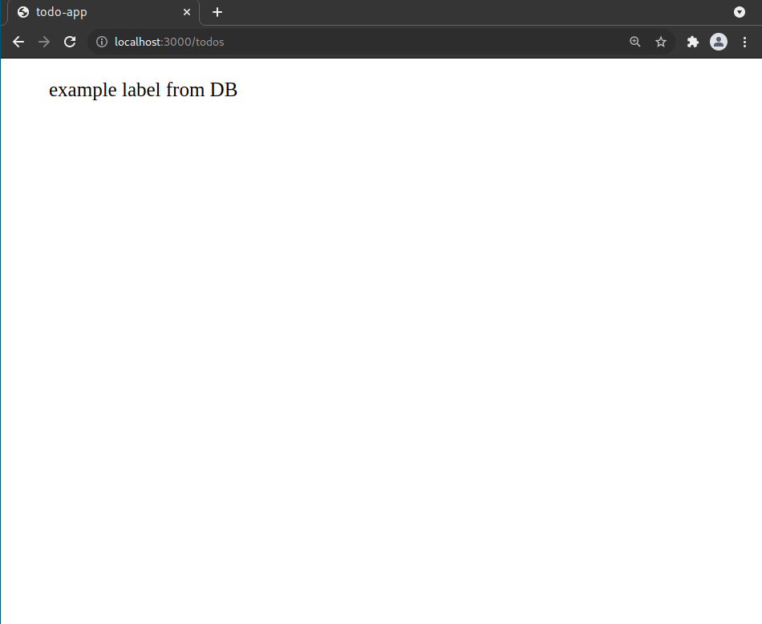

How to make a Todo app using Xiana
Requirements
- docker
- docker-compose
Create a new app
1. Use Xiana template to create project scaffold
Run the following code in your terminal
lein new xiana todo-app
This will create a directory todo-app containing project scaffold.
2. Satisfy dependencies
Run the following command from the newly created project directory to fetch frontend dependencies
lein shadow npm-deps
3. Run dockerized database
You need to have docker and docker-compose installed on your machine for the following command to work. Run the following from the root directory of your project.
docker-compose up -d
This should spin up a PostgreSQL database on port 5433. Name of the DB is todo_app You can verify that the database is running by connecting to it. Value of username and password is postgres.
docker exec -it todo-app_db_1 psql -U postgres -d todo_app
which should open a PostgreSQL shell if successful.
4. Populate database with data
On application start, the framework will look for database migrations located in the configured location. By default, this location is set to resources/migrations directory*.*
It is possible to create migrations by running from the project directory
lein migrate create todos
This will create two migration files inside the resources/migrations directory. Both file names will be prefixed by the timestamp value of the file creation.
Put the following SQL code inside the todos-up.sql file
CREATE EXTENSION IF NOT EXISTS "uuid-ossp";
--;;
CREATE TABLE todos
(
id uuid NOT NULL DEFAULT uuid_generate_v4() PRIMARY KEY,
label varchar(2048) NOT NULL,
done boolean NOT NULL DEFAULT false,
created_at timestamptz NOT NULL DEFAULT now()
);
--;;
INSERT INTO todos (label) values ('example label from DB');
and this one into the todos-down.sql file.
DROP TABLE todos;
5. Start the application
- Run Clojure REPL and load contents of file dev/user.clj into it.
- Execute function start-dev-system
- Your Todo App should now be running. You can verify it by visiting URL http://localhost:3000/re-frame in your browser.
6. Add endpoint to backend API
Routes definition can be found in the src/backend/todo_app/core.clj file. Replace the routes definition with following code.
(def routes
[["/api/todos" {:action #'fetch}]])
define a function to be called when the endpoint is hit.
(defn fetch
[state]
state)
Now you need to reload the changed files to REPL and restart the application by executing start-dev-system function once again. Now opening http://localhost:3000/api/todos in your browser returns a blank page.
7. Hello World!
Change the implementation of fetch function to display “Hello World!” every time our endpoint is hit.
(defn fetch
[state]
(assoc state :response {:status 200
:body "Hello World!"}))
Reload the modified function and restart the application.
8. Return contents of the todos table
Change the implementation of function fetch once again and create a new view function.
Function:
- fetch - now contains SQL query and a reference to a newly created view function.
- view - describes a transformation of the data returned from the database to the form returned by server response.
(defn view
[{{db-data :db-data} :response-data :as state}]
(assoc state :response {:status 200
:body (mapv :todos/label db-data)}))
(defn fetch
[state]
(assoc state
:view view
:query {:select [:*] :from [:todos]}))
Again, reload the modified function and restart the application.
After running following curl command from your shell, live data from your database should appear on your screen.
curl http://localhost:3000/api/todos
Create a page in the app to display data returned by the endpoint
1. Add frontend dependencies
Add following dependencies into project.clj file.
(defproject
...
:dependencies [
...
[cljs-ajax "0.8.4"]
[day8.re-frame/http-fx "0.2.3"]
...
]
...
)
2. Set initial value of re-frame database
File src/frontend/todo_app/db.cljs contains initial value of re-frame databse. Inside of this file replace value of * default-db* to following:
(def default-db
{:todos []})
3. Define re-frame events
Replace contents of src/frontend/todo_app/events.cljs file with the following code:
(ns todo-app.events
(:require
[re-frame.core :as re-frame]
[ajax.core :as ajax]
[day8.re-frame.http-fx]
[todo-app.db :as db]
))
(defn url [tail] (str "http://localhost:3000" tail))
(re-frame/reg-event-db
::initialize-db
(fn [_ _]
db/default-db))
(re-frame/reg-event-db
::add-todos->db
(fn [db [_ response]]
(assoc db :todos response)))
(re-frame/reg-event-db
::failure
(fn [db _]
(js/console.error "Something is wrong!")
db))
(re-frame/reg-event-fx
::fetch-todos!
(fn [_ [_]]
(js/console.info "Fetching todos!")
{:http-xhrio {:uri (url "/api/todos")
:response-format (ajax/json-response-format {:keywords? true})
:format (ajax/json-request-format)
:on-success [::add-todos->db]
:on-failure [::failure]}}))
4. Define re-frame subscription
Replace contents of src/frontend/todo_app/subs.cljs file with the following code:
(ns todo-app.subs
(:require
[re-frame.core :as re-frame]))
(re-frame/reg-sub
::todos
(fn [db]
(:todos db)))
5. Define page view
Replace contents of src/frontend/todo_app/views.cljs file with the following code:
(ns todo-app.views
(:require
[re-frame.core :as re-frame]
[todo-app.events :as events]
[todo-app.subs :as subs]))
(defn main-panel []
(re-frame/dispatch [::events/fetch-todos!])
(let [todos (re-frame/subscribe [::subs/todos])]
[:div
(map #(identity [:ul %])
@todos)]))
6. Define frontend routes
Update routes definition in file src/backend/todo_app/core.clj to following:
(def routes
[["/todos" {:action #'re-frame/handle-index}]
["/assets/*" (ring/create-resource-handler {:path "/"})]
["/api" {}
["/todos" {:get {:action #'fetch}}]]])
7. At this point the app should be running
Again, reload the modified code and restart the application. After opening http://localhost:3000/todos in your browser, it returns a page containing the data from our database that looks like this:

Create another endpoint to add a new entry to the DB
Left as an exercise for the reader.